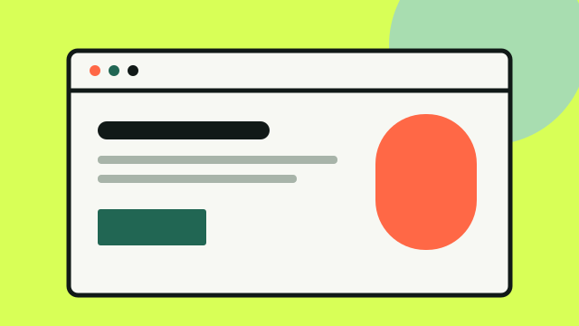
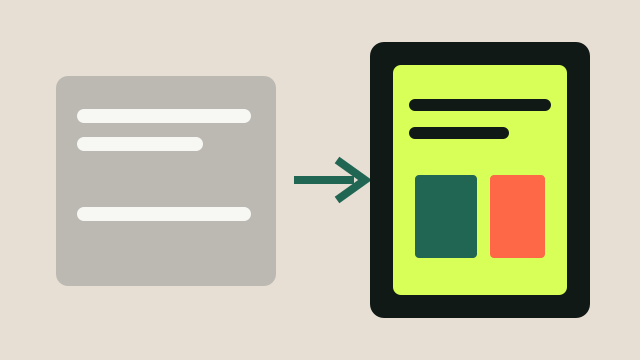
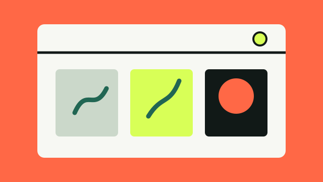
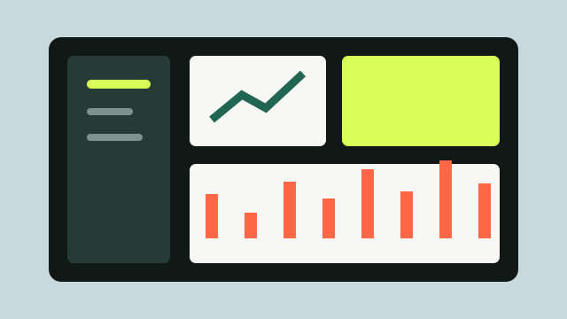
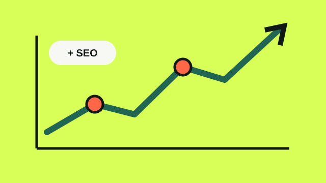
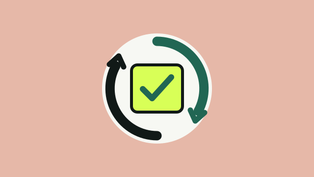

Création de site
Un site sur mesure pour présenter votre activité, rassurer vos visiteurs et générer des contacts.
- Site vitrine
- Landing page
- Portfolio
- Formulaire de contact
Disponible pour de nouveaux projets · La Roche-sur-Yon
Sites web, boutiques en ligne, fonctionnalités métier et accompagnement digital : je construis des solutions adaptées aux indépendants, artisans et petites entreprises.
Projets sélectionnés
Des interfaces adaptées à chaque besoin : présenter une activité, mettre en valeur une offre ou simplifier une prise de commande.
Mes services
Un besoin ponctuel ou un projet complet : choisissez la brique utile aujourd'hui, puis faites évoluer votre solution demain.

Un site sur mesure pour présenter votre activité, rassurer vos visiteurs et générer des contacts.

Modernisez votre image et améliorez l'expérience de votre site sans perdre ce qui fonctionne déjà.

Vendez vos produits en ligne grâce à un parcours simple, clair et adapté à votre façon de travailler.

Gagnez du temps avec une interface conçue autour de vos processus, de vos clients et de vos données.

Rendez votre site plus rapide, mieux structuré et plus facilement compréhensible par vos futurs clients.

Faites évoluer votre outil en gardant un site fiable, sécurisé et simple à administrer au quotidien.
Ma démarche
Vous savez où nous en sommes, pourquoi chaque choix est fait et ce que votre site apporte à votre activité.
Nous clarifions votre activité, vos clients, vos objectifs et les fonctions réellement nécessaires.
Je transforme vos besoins en une direction visuelle et une structure web claires, modernes et cohérentes.
Je construis une interface rapide, responsive et reliée aux fonctionnalités utiles à votre projet.
Après les tests, je publie votre solution et reste disponible pour vous aider à la faire évoluer.